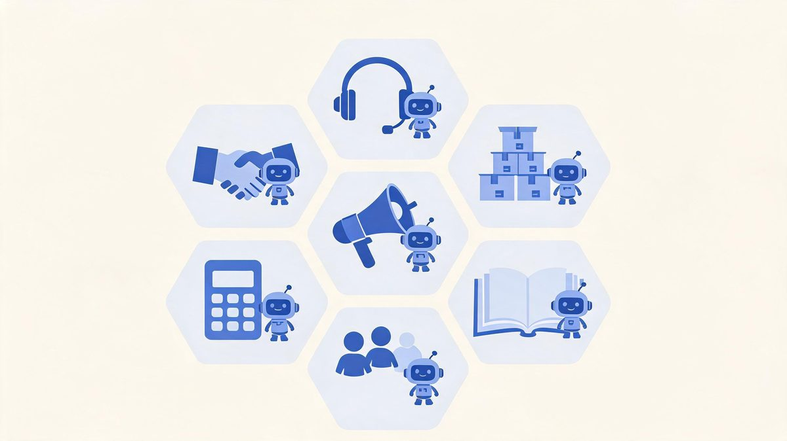
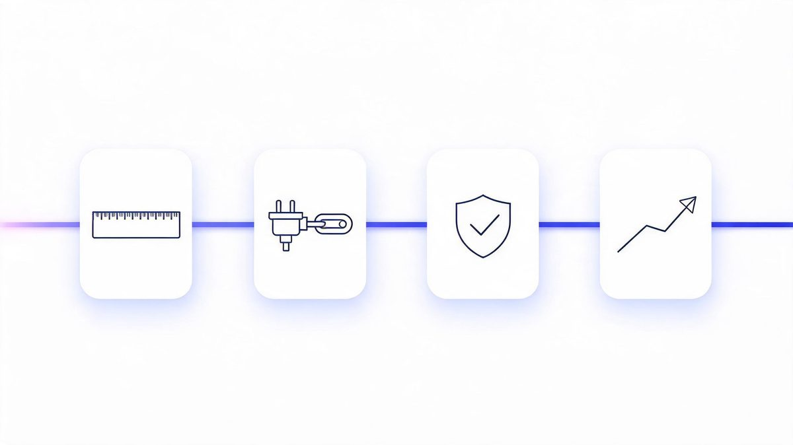

AI Agent Integration for Business: Use Cases and Payoffs
Every vendor pitch says agents will "transform your business." The data says something sharper: 88% of organizations already use AI somewhere (McKinsey), but only about 11% run agents in production (Fortune) — and the gap between those numbers is where businesses either save thousands of hours or burn six figures.
Quick answer: AI agent integration for business means connecting agents to the systems you already run — CRM, email, databases, invoicing — so they complete work: qualifying leads, processing orders, triaging tickets, chasing invoices. It pays off first in functions with measurable, repeatable workflows, and it fails first where nobody measured the "before."
Key takeaway: Start with one workflow in one function — support or sales — where a wrong output costs an apology, not a refund. Measure the baseline first. Budget for integration (the hidden line), not just the platform. Expand only when the audit log earns it. That sequence separates the 11% in production from the 88% still piloting.
TL;DR:
- Seven functions fit agents today: support, sales, marketing, operations, finance, HR screening, and internal knowledge search.
- The visible cost is the small cost. Platforms run $20-$100/month; the integration bill hides behind them.
- 88% of pilots never ship (IDC) — because teams skip measurement, permissions, and exception design.
- 30 days is enough to prove value on one workflow, with a baseline and a weekly review ritual.
Table of Contents
Where Agents Fit: 7 Business Functions
Support answers first. It is the function with the most measurable workflow — tickets in, resolutions out — and the most tolerance for a wrong draft.
Which business functions benefit most from AI agents?
Which business functions benefit most from AI agents? The business functions that benefit most from AI agents are seven: customer support, sales, marketing, operations, finance, HR screening, and internal knowledge search, sorted by countable inputs and outputs.
According to McKinsey's State of AI research, 88% of organizations now use AI in at least one business function, up from 78% in 2024 (Sources: McKinsey, 2026). For example, Zscaler's 2026 survey found 62% of organizations experimenting with agents and 23% at broader deployment, led by support and sales teams (Sources: Zscaler, 2026). Gartner's $2.595 trillion AI spending forecast for 2026 funds exactly these functions (Sources: Gartner, 2026).
We found the sorting rule is simple: the function with a countable input and output integrates first. First, score each function on volume and measurability. Second, pick the highest score with the lowest failure cost. Finally, ignore the function with the loudest champion but no numbers, and start where the audit can prove the gain.
| Function | Agent Use Case | What You Measure |
|---|---|---|
| Support | Triage, draft first responses, resolve repeats | Resolution time, deflection rate |
| Sales | Score leads, update CRM, draft follow-ups | Qualified leads, response speed |
| Marketing | Assemble content, compile campaign reports | Production hours, publish rate |
| Operations | Process orders, check inventory | Throughput, error rate |
| Finance | Match invoices, flag discrepancies | Cycle time, exceptions caught |
| HR | Screen applications, answer policy questions | Screening time, candidate experience |
| Knowledge | Search internal docs, answer onboarding | Search success, time saved |
The Benefits That Show Up in Numbers
The benefits are boring — and that is why they are real. Time returned to staff. Fewer copied-paste errors. Faster first responses. Slower burnout.
What ROI can a business expect from AI agents?
What ROI can a business expect from AI agents? The ROI a business can expect from AI agents falls into three measured categories: time reclaimed on repetitive work, error reduction on data-entry tasks, and response-speed gains in customer-facing functions.
According to IDC research, the pilots that reach production share one trait: a measured baseline before launch (Sources: IDC, 2026). For example, a solo owner recovering 6.8 hours weekly gains roughly 350 hours per year, worth over $10,000 at a $30 hourly value, and 88% of organizations now run AI in at least one function (Sources: McKinsey, 2026).
We found the businesses reporting real ROI instrument three numbers before the agent arrives: hours spent, error rate, and turnaround time. First, measure the current state for two weeks. Second, run the agent with full human approval. Finally, compare weekly, because Gartner counts over 40% of agentic AI projects canceled for unclear value (Sources: Gartner, 2026).
What Integration Actually Costs
Three cost lines exist. Brochures show you the first one.
How much does AI agent integration cost a business?
How much does AI agent integration cost a business? AI agent integration costs a business three lines: platform fees of $20 to $100 monthly for no-code tools or $12,500 to $100,000 and up for custom builds, integration engineering for scoped API access and monitoring, and measurement ownership.
According to IDC research, 88% of AI agent pilots never reach production, and the blockers are integration architecture and data readiness rather than model quality (Sources: IDC, 2026). For example, two companies buy the same $500-per-month platform: one ships a demo in a week, the other budgets four weeks of integration and ships a system that updates CRM records safely. We found integration routinely costs more than the platform in year one.
First, price the plumbing honestly. Second, fund the baseline measurement. Finally, hold 20% of the budget for the exception cases nobody predicted, because Gartner's 40% cancellation rate punishes unbudgeted surprises (Sources: Gartner, 2026).
The Risks Nobody Puts in the Brochure
Agents fail differently than software. A buggy form shows an error. A misconfigured agent quietly does the wrong thing at scale.
Are AI agents safe for business data?
Are AI agents safe for business data? Agents are as safe as their permission design: scoped API keys, field-level write access, verification before actions, audit logs, and human approval above value thresholds are the standard 2026 control set. According to Gartner, over 40% of agentic AI projects are canceled for unclear value and high risk (Sources: Gartner, 2026), and IDC attributes most pilot failures to integration and security gaps rather than model quality (Sources: IDC, 2026). For example, an agent with unscoped write access that misreads a pricing policy does not display a wrong number — it writes wrong numbers to production records. We found the risk conversation belongs in week one, not the compliance review at the end. First, classify every planned agent action by blast radius. Second, put human approval wherever the radius is financial or customer-facing. Finally, log everything, because audit trails are what turn an agent from a risk into an employee.
The brochure risk vs the real risk: brochures warn about "AI making mistakes." The real risk is quieter — an agent with too much access doing exactly what it was told, based on data nobody cleaned. Governance is not bureaucracy; it is the difference between the 11% in production and everyone else.
How to Start: The First 30 Days
How should a business start with AI agent integration?
How should a business start with AI agent integration? A business should start with AI agent integration through a 30-day, single-workflow pilot.
Measure the current state in days 1 to 7. Connect one system with read-only access in days 8 to 14. Add write access to one low-risk field with full approval in days 15 to 24. Review the audit log in days 25 to 30.
According to Zscaler's 2026 survey, 23% of organizations have reached broader agent deployment while 62% remain in experimentation, and the difference is pacing (Sources: Zscaler, 2026). For example, a five-person support team using Salesforce or HubSpot can pilot ticket triage in a week before any custom integration. We found the 30-day frame forces the baseline measurement most teams skip.
First, pick the workflow where a mistake is annoying, not expensive. Second, write down the numbers you will compare. Finally, present the delta on day 30 with the exception log attached.

FAQs
What does AI agent integration mean for a business?
It means connecting AI agents to company systems — CRM, databases, APIs, workflows — so they complete authorized tasks: qualifying leads, processing orders, triaging tickets. The value is in the actions completed, not the answers given.
Which business functions benefit most from AI agents?
Seven functions have documented wins: support, sales, marketing, operations, finance, HR screening, and internal knowledge search. The sorting rule: countable input, countable output, tolerable failure cost. Support and sales usually integrate first.
How much does AI agent integration cost a business?
Three lines: platforms ($20-$100/month no-code, $12,500-$100,000+ custom), integration engineering (usually the bigger line in year one), and measurement ownership. IDC attributes 88% of failed pilots to underestimating the second line.
What is the ROI timeline for AI agent integration?
One workflow can show measurable results in 30-90 days: hours saved, error rates, turnaround time. The prerequisite is a baseline measured before launch — Gartner counts over 40% of agentic projects canceled for unclear value, which is a measurement failure.
Are AI agents safe for business data?
As safe as their permission design. Scoped API keys, field-level writes, verification before actions, audit logs, and human approval above value thresholds are the standard controls. The risk comes from skipping governance, not from the technology.
Should a small business start with a chatbot or an AI agent?
Chatbot first when the job is conversation — it is cheaper and generates the question logs that justify the agent build later. Move to an agent when a workflow needs actions across systems. The sequence is in our AI agents vs chatbots comparison.
The Bottom Line
AI agent integration for business is not a technology purchase — it is an operating decision about which work your team should never do by hand again. The numbers frame the decision: 88% of organizations use AI somewhere, 79% have touched agents, and only about 11% run them in production. The gap is not ambition. It is measurement, permissions, and exception design — the boring parts that this guide keeps repeating because they are the parts that work. Pick one workflow. Measure it for two weeks. Connect one system. Put a human approval on anything expensive. Compare, expand, repeat. When you are ready for the plumbing, the AI agent integration pillar guide covers the full framework — the agents vs chatbots comparison settles the build question, and workflow automation covers the monitoring ritual. Thirty days from now, you could be the team with numbers.
Sources
- McKinsey State of AI — 88% organizational AI adoption, 2026
- Fortune enterprise research — 79% agent adoption vs 11% production, 2026
- IDC — 88% of AI agent pilots never reach production, via Institute PM, 2026
- Gartner — 40%+ agentic projects canceled; $2.595T AI spending forecast, 2026
- Zscaler Digital Experience Predictions 2026 — 62% experimenting, 23% broader deployment
- Platform documentation: Salesforce Agentforce, Microsoft Copilot Studio, HubSpot Breeze, Zapier AI Agents, 2026